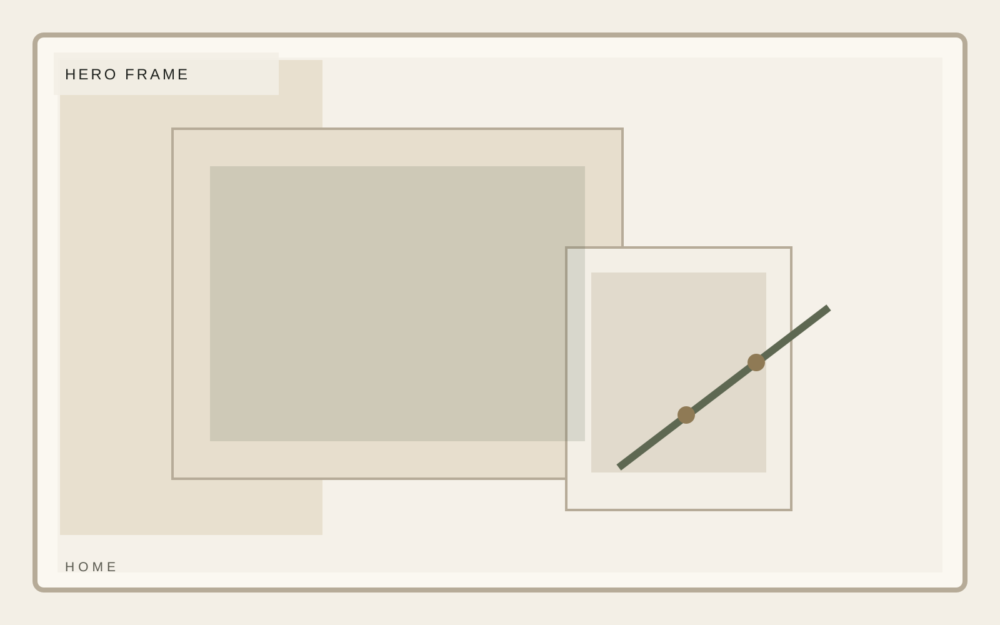
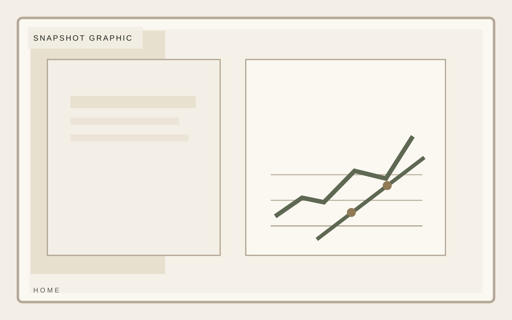
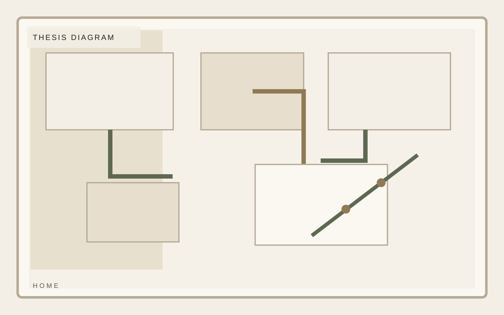
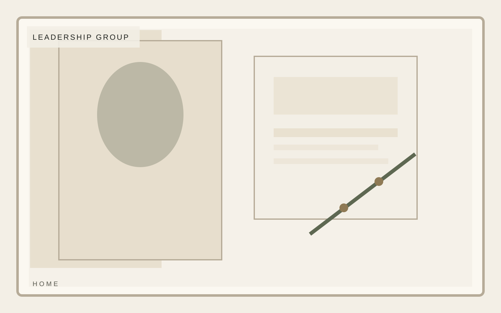
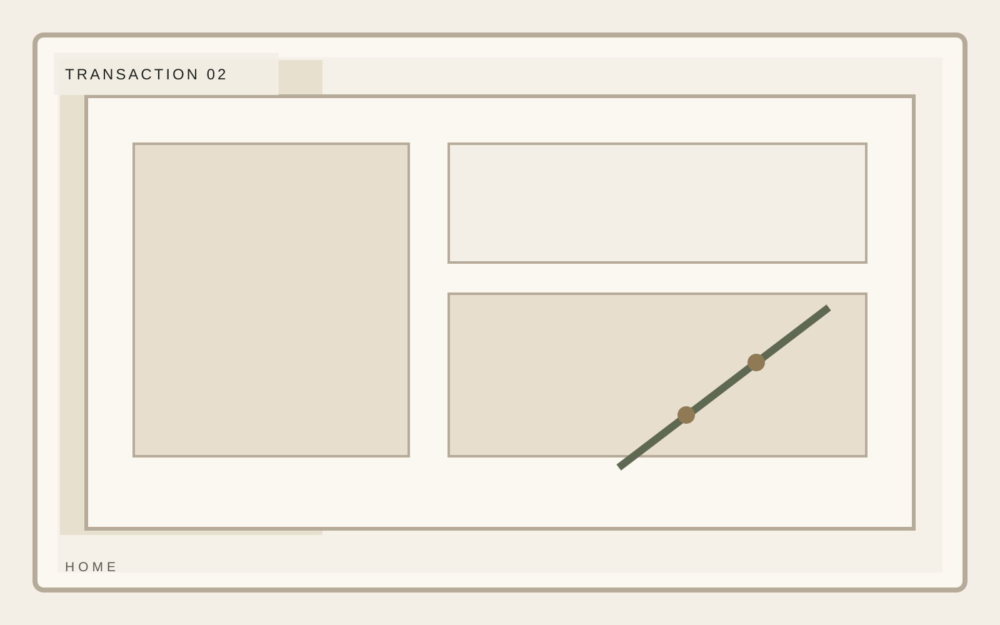

Institutional investment
Calm capital for complicated operating situations.
A composed private investment platform focused on durable middle-market businesses, disciplined underwriting, and practical value creation. Designed for firms that need an institutional exterior with an authored editorial core.
Focus
North American middle market
Hold posture
3 to 7 year horizon
Approach
Operator-led value creation

Institutional investment
Snapshot
The opening data frame should read like a confident investor memorandum: selective metrics, no dashboard clutter, and enough density to imply real operating fluency.
Selective mandate
Operator context
Calm reporting



Institutional investment
Thesis
The investment thesis section needs to prove taste and restraint. It should communicate what the firm looks for, what it avoids, and why that selectivity compounds over time.
Selective mandate
Operator context
Calm reporting
Institutional investment
Model
The operating model must feel practical rather than consultant-heavy. Show how capital, operating work, and reporting cadence fit together without turning the page into process wallpaper.
Selective mandate
Operator context
Calm reporting
Institutional investment
Selected Transactions
Selected situations should read as editorial proof. Fewer examples, better framing, and crisp context beat an overcrowded tombstone wall.
Selective mandate
Operator context
Calm reporting

Institutional investment
Leadership
Leadership preview should establish judgment and posture immediately. Titles matter less than whether the page conveys clear operating seniority.
Avery Lane
Managing Partner
Jordan Pike
Operating Principal
Mina Sol
Portfolio Strategy
Institutional investment
Contact
Northline uses contact to establish credibility through structure, pacing, and real information density rather than decorative startup shortcuts. This home page stays consistent with the template system while giving this section its own visual weight.
Selective mandate
Operator context
Calm reporting